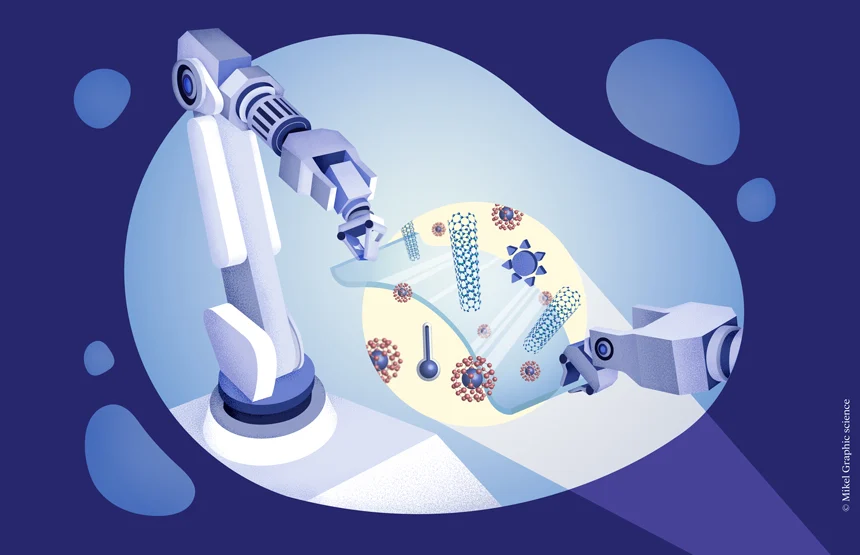

Por definición, la Nanotecnología, es el estudio y desarrollo de sistemas en escala nanométrica, "nano" es un prefijo del Sistema Internacional de Unidades que viene del griego νάνος que significa enano, y corresponde a un factor 10^-9, que aplicado a las unidades de longitud, corresponde a una mil millonésima parte de un metro (10^-9 Metros) es decir 1 Nanómetro.
En esta escala se observan propiedades y fenómenos totalmente nuevos, que se rigen bajo las leyes de la Mecánica Cuántica, estas nuevas propiedades son las que los científicos aprovechan para crear nuevos materiales (nanomateriales) o dispositivos nanotecnológicos.
La Nanotecnología promete soluciones a múltiples problemas que enfrenta actualmente la humanidad, como los ambientales, energéticos, de salud (nanomedicina), y muchos otros, sin embargo estas nuevas tecnologías pueden conllevar a riesgos y peligros si son mal utilizadas.
La nanotecnología es la manipulación de la materia a una escala casi atómica para crear nuevas estructuras, materiales y aparatos. Esta tecnología promete avances científicos en muchos sectores como la medicina, productos para el consumidor, energía, materiales y fabricación. La nanotecnología no está definida concretamente, aunque en términos generales abarca estructuras, aparatos y sistemas diseñados que tienen una escala de entre 1 y 100 nanómetros. Los materiales de este tamaño presentan propiedades únicas que afectan las reacciones físicas, químicas y biológicas. El estudio, el desarrollo y la utilización de estas propiedades es parte esencial de las nuevas tecnologías.
Al igual que ocurre con toda nueva tecnología, lo más probable es que la exposición más temprana y extensa a los riesgos tienda a ocurrir en el sitio de trabajo. Los trabajadores que laboran en industrias relacionadas con la nanotecnología enfrentan una posible exposición a materiales únicos creados artificialmente con tamaños, formas y propiedades físicas y químicas novedosas. Los riesgos de salud ocupacional asociados a la fabricación y al uso de nanomateriales no están claros del todo. En la actualidad se dispone de información mínima sobre las rutas predominantes de exposición, los niveles de exposición potenciales y la toxicidad material de los nanomateriales.
Los estudios indican que las nanopartículas de baja solubilidad son más tóxicas que las partículas de mayor tamaño cuando se comparan con base en su masa. Existen indicaciones sólidas de que el área de la superficie de la partícula y su composición química son los factores responsables de la respuesta observada en cultivos celulares y en animales. También hay indicativos de que las nanopartículas pueden penetrar a través de la piel o pasar del sistema respiratorio a otros órganos. Se continúa realizando investigaciones para entender la forma en que estas propiedades especiales pueden causar efectos específicos en la salud.
Nanotecnologia Funciones de la nanotecnología A continuación, se presentan algunas de las funciones más importantes de la nanotecnología: Desarrollo de materiales y dispositivos de alta resistencia y ligereza: La nanotecnología permite crear materiales y dispositivos con propiedades únicas que los hacen más resistentes, ligeros y duraderos que los materiales convencionales. Aplicaciones médicas: La nanotecnología se está utilizando para desarrollar sistemas de entrega de medicamentos más efectivos, detectores de enfermedades, implantes y prótesis, y dispositivos para el diagnóstico y tratamiento de enfermedades. Energía renovable: La nanotecnología está siendo usada para desarrollar tecnologías de energía renovable, como células solares, baterías y supercondensadores más eficientes y económicos. Electrónica y computación: La nanotecnología está permitiendo el desarrollo de dispositivos electrónicos más pequeños y potentes, como transistores, chips de memoria y pantallas de visualización. Aplicaciones medioambientales: La nanotecnología está siendo empleada para desarrollar tecnologías de purificación de agua y aire, así como para la eliminación de contaminantes. Agricultura y alimentación: La nanotecnología se está usando para desarrollar tecnologías de conservación de alimentos, sensores para la detección de patógenos en los alimentos y sistemas de liberación controlada de nutrientes para la agricultura. Estas son solo algunas de las funciones de la nanotecnología, pero hay muchas otras áreas donde esta disciplina puede tener un gran impacto, como la industria aeroespacial, la construcción y la manufactura en general. Tipos de nanotecnología La nanotecnología puede clasificarse en cuatro tipologías dependiendo de dos factores: forma de proceder y naturaleza del medio donde se trabajan. A continuación te lo explicamos con detalle. Top-down: Las estructuras se miniaturizan, es decir, se hacen más pequeñas. Se adaptan a la escala nanométrica, de 1 a 100 nanómetros. Es la más frecuente en la actualidad. Un ejemplo es el sector de la electrónica con los elementos de ordenadores, smartphones,... Bottom-up: El proceso es el contario al top-down. En otras palabras, se parte de una estructura nanométrica y se construye un elemento mayor. Seca: Es la utilizada en la fabricación de estructuras en materiales como el carbón, diferentes metales,... que no funcionan con humedad. Húmeda: Al contario que la seca, es la que utiliza elementos que funcionan en un entorno acuoso. Por ejemplo, el material genético, membranas,... Aplicaciones para los tipos de nanotecnología por sectores Ciertamente, resulta impresionante imaginar como algo tan pequeño transformar nuestra realidad. Pero, ¿cómo? ¿En qué sectores puede aplicarse la nanotecnología? ?Existen inconvenientes en su utilización? ¿Puede haber riesgos asociados? Te lo contamos: Aplicaciones ElectrónicaPuede que este sea el sector que primero aparece en el imaginario colectivo al hablar de tipos de nanotecnología. Pero no es el único, aunque sí uno de los más importantes en la actualidad. En este sentido, la mejora de las propiedades en los materiales permite fabricar dispositivos y accesorios más pequeños, rápidos, resistentes, eficientes,... Sector energéticoPermite reducir costes, multiplicar la potencia de receptores de energía como molinos eólicos, optimizar el rendimiento de combustibles, ahorro de energía, entre otras cuestiones. En definitiva, la nanotecnología y los nanomateriales son claves para seguir avanzando hacia la generación y consumo de energía de forma sostenible y responsable. Ámbito médicoLas propiedades de los nanomateriales permiten que los profesionales de la medicina puedan optimizar su labor. Es decir, ayuda a ofrecer diagnósticos precoces, tratar enfermedades graves como el cáncer o neurodegenerativas. Incluso, se utilizan en productos farmacéuticos que utilizamos frecuentemente como las cremas de protección solar. Producción y seguridad alimentariaPermite la detección de patógenos en los alimentos para reducir los riesgos para los consumidores. Además, puede ayudar a aumentar la resistencia de los productos para mejorar su distribución, por ejemplo. Industria textilLa aplicación de la nanotecnolía a la industria textil permite mejorar los tejidos para que no se arruguen o no se manchen. Igualmente, contribuye a encontrar materiales más resistentes o ligeros para vestimentas específicas como los equipamientos deportivos. Posibles riesgos de los diferentes tipos de nanotecnología No todo puede ser positivo, la nanotecnología entraña algunos riesgos. Su uso indebido puede ser el detonante para problemas de grandes dimensiones. Ciertamente, los beneficios son muchos más que los inconvenientes. Aunque no está demás conocerlos para tratar de evitarlos o minimizarlos en la medida de lo posible: Problemas medioambientales: modificar los átomos o moléculas de una materia podría dar lugar a nuevas toxinas perjudiciales para el entorno. Destrucción de empleo: como la mayoría de tecnologías, su avance pone en riesgo puestos de trabajo que quedan obsoletos. En este caso, los nuevos materiales podrían cambiar los procesos y acabar con tareas habituales. Sin embargo, crearía también nuevas oportunidades. Dificulta la seguridad: la nanotecnología podría ayudar al espionaje, a la creación de armas más eficaces, u otras cuestiones. Es decir, herramientas que comprometen la integridad de la sociedad y contribuyen a los conflictos armados. Áreas de aplicación en los que la nanotecnología ya ha desarrollado productos: Medicina En la medicina, la nanotecnología se está utilizando para desarrollar nanomateriales y dispositivos que pueden ser utilizados para diagnosticar y tratar enfermedades de manera más precisa y eficiente. Algunos ejemplos de aplicaciones de la nanotecnología en la medicina son: Nanomedicamentos: medicamentos que utilizan nanomateriales para mejorar su eficacia y reducir sus efectos secundarios. Nanosensores: dispositivos que pueden detectar enfermedades a nivel molecular y ayudar a diagnosticar enfermedades de manera temprana. Nanodispositivos: dispositivos que pueden ser utilizados para tratar enfermedades en el cuerpo, como nanocápsulas que liberan medicamentos de manera controlada. Por ejemplo, un ejemplo de nanomedicamento es la nanocápsula de docetaxel, un medicamento utilizado para tratar el cáncer de mama. La nanocápsula de docetaxel está formada por una capa de nanopartículas de polímero que rodea el medicamento. Esta capa protege al medicamento y permite que se libere de manera controlada en el cuerpo, lo que ayuda a mejorar su eficacia reduciendo su toxicidad y sus efectos secundarios. Energía En el campo de la energía, la nanotecnología se está utilizando para desarrollar nanomateriales que pueden mejorar la eficiencia de las baterías y los paneles solares. Algunos ejemplos de cómo se está aplicando la nanotecnología en la energía son: Nanomateriales para baterías: nanomateriales como nanotubos de carbono se están utilizando para mejorar la capacidad y la durabilidad de las baterías. Nanomateriales para paneles solares: nanomateriales como nanopartículas de silicio se están utilizando para mejorar la eficiencia de los paneles solares y aumentar su capacidad de producir energía. Nanomateriales para almacenamiento de energía: nanomateriales como nanotubos de carbono se están utilizando para desarrollar nuevos tipos de baterías y dispositivos de almacenamiento de energía. Una empresa que ha desarrollado un producto de nanotecnología para la energía es NanoTechLabs. Uno de los productos desarrollados por esta empresa es una capa de nanotubos de carbono que se puede aplicar a las baterías para mejorar su capacidad y durabilidad. Esta capa de nanotubos de carbono permite que las baterías carguen y descarguen más rápido y con mayor eficiencia, lo que las hace más duraderas y capaces de producir más energía. Ingeniería informática En el campo de la ingeniería informática, la nanotecnología se está utilizando para desarrollar nanomateriales y dispositivos que puedan mejorar la eficiencia y la velocidad de los sistemas informáticos. Algunos ejemplos de cómo se está aplicando la nanotecnología en la informática son: Nanomateriales para la fabricación de chips: nanomateriales como nanotubos de carbono se están utilizando para fabricar chips más pequeños y eficientes. Nanosensores: dispositivos que pueden detectar señales eléctricas a nivel molecular y ayudar a mejorar la velocidad y la eficiencia de los sistemas informáticos. Nanodispositivos: dispositivos que pueden ser utilizados para almacenar y procesar información a nivel molecular, lo que permite una mayor capacidad de almacenamiento y una mayor velocidad de procesamiento. También las grandes multinacionales apuestan por el desarrollo de productos nanotecnológicos. Intel Nanotech Labs, por ejemplo, es un laboratorio de investigación y desarrollo de Intel Corporation, una empresa líder en la fabricación de chips y tecnología de la información. Intel Nanotech Labs ha desarrollado varios productos de nanotecnología para la fabricación de chips, incluyendo materiales de empaquetado más resistentes y duraderos, y capas de nanotubos de carbono que mejoran la velocidad y la eficiencia de los chips. Industria alimentaria En la industria alimentaria, la nanotecnología se está utilizando para desarrollar nanomateriales y dispositivos que puedan mejorar la calidad, la seguridad y la eficiencia de los alimentos. Algunos ejemplos de cómo se está aplicando la nanotecnología en la industria alimentaria son: Nanomateriales para empaquetado: nanomateriales como nanofibras de vidrio se están utilizando para fabricar materiales de empaquetado que son más resistentes, impermeables y duraderos. Nanosensores: dispositivos que pueden detectar contaminantes y bacterias en los alimentos y ayudar a garantizar su seguridad. Nanomateriales para fortificar los alimentos: nanomateriales como nanopartículas de hierro se están utilizando para fortificar los alimentos con nutrientes esenciales. Una empresa que ha desarrollado productos de nanosensores para la industria alimentaria es NanoScent. Esta empresa ha desarrollado un nanosensor que se puede utilizar para detectar contaminantes y bacterias en los alimentos de manera rápida y precisa. Este nanosensor utiliza tecnología de nanotecnologí para detectar la presencia de contaminantes y bacterias a nivel molecular, lo que permite identificarlos de manera temprana y evitar posibles problemas de seguridad alimentaria. Industria textil En la industria textil, la nanotecnología se está utilizando para desarrollar nanomateriales y dispositivos que puedan mejorar la calidad, la comodidad y la durabilidad de la ropa y otros productos textiles. Algunos ejemplos de cómo se está aplicando la nanotecnología en la industria textil son: Nanofibras: nanomateriales como nanofibras de vidrio o de polímeros se están utilizando para fabricar ropa y otros productos textiles más resistentes y duraderos. Nanofiltración: nanomateriales como nanofibras de polímero se están utilizando para fabricar tejidos que puedan bloquear los rayos UV y proteger la piel de los daños causados por el sol. Nanotratamiento: nanomateriales como nanopartículas de plata se están utilizando para tratar la ropa y otros productos textiles, lo que les confiere propiedades antimicrobianas y ayuda a prevenir el olor y el crecimiento de bacterias. Una empresa que ha desarrollado productos de nanotecnología para la industria textil es NanoTex. Esta empresa ha desarrollado un nanofibra que se puede aplicar a la ropa y otros productos textiles para mejorar su resistencia y su durabilidad. La nanofibra utiliza nanomateriales como nanofibras de vidrio o de polímero para mejorar la resistencia y la durabilidad de la ropa y otros productos textiles. Esto permite que la ropa sea más cómoda y duradera, y ayuda a mantener su forma y su color original por más tiempo. Aplicaciones de la nanotecnología en la vida cotidiana Bloqueador solar Con el fin de hacer los protectores solares más efectivos, se han agregado nanoparticulas a ellos. Especialmente, han añadido dióxido de titanio y óxido de zinc, que son altamente efectivas para bloquear la radiación UV. Esto ha permitido que los protectores solares no sean tan gruesos y pesados, sino que tengan un aspecto más transparente. Además, protegen mejor a la piel. Ropa La ropa inteligente también puede ser mejorada con nanotecnología. Por un lado, se puede incorporar nanoparticulas de sílice para crear telas que repelan el agua y otros líquidos. Estas se pueden agregar al incorporarlas en la tela o pulverizarla sobre la superficie. Además, se puede crear ropa antimicrobiana. Con nanopartículas de plata se puede destruir cualquier patógeno, lo cual es muy útil para las pieles sensibles. Esto lo están aprovechando, sobre todo, marcas de ropa deportiva o de ropa interior. Muebles Con propiedades similares a la de la ropa, la nanotecnología puede ser utilizada también en muebles. Estos se pueden tapizar con nanosistemas que otorgen impermeabilidad y resistencia a manchas; o, incluso, que reduzca su inflamabilidad hasta un 35 %. Asimismo, se pueden aplicar en camas y lencería de cama. El tejido es de algodón en las capas exteriores, y en su interior tiene una diminuta red de nanofibras que no permite que ningún ácaro pueda cruzarlo. Así se protegen la almohada y colchón. Aplicaciones de la nanotecnología en la agricultura Palguicidas Entre los usos y aplicaciones de la nanotecnología, la agricultura ocupa un lugar especial. Lo cierto es que esta diminuta tecnología podría ayudar a resolver algunos de los grandes problemas del sector. El manejo de enfermedades es uno de ellos. La nanotecnología podría generar alternativas verdes para el manejo de enfermedades fitopatogénicas por medio de nanopartículas metálicas o la incorporación de microorganismos benéficos y matrices zeolíticas. Estas últimas pueden actuar como portadores de los organismos y ser liberados gradualmente. Además, incrementan la dispersión y humectabilidad de las formulaciones agrícolas. Es decir, pueden llegar a más rincones, liberarse gradualmente y permanecer más tiempo en las plantas. Los plaguicidas tienen distintas categorías: pueden ser herbicidas para destruir malezas; insecticidas para el control de plagas; o funguicidas y bactericidas contra el ataque de microorganismos. La nanotecnología permite atacar cada uno de esos campos con la ventaja de generar una liberación más lenta y controlada. De esta forma, aumenta su nivel de acción y se requiere menos productos. Nanoherbicidas Los nanoherbicidas además tienen la ventaja adicional de que se dirigen a un público específico. Por lo tanto, se evita dañar a las plantas cultivadas. Su uso también permite reducir la contaminación ambiental provocada por residuos industriales y productos químicos agrícolas. En este caso se usarían nanopartículas metalicas y nanoencapsulados. La ventaja de estos últimos es que facilitan la degradación de los herbicidas, lo que reduce su impacto sobre el suelo. La tecnología todavía no se ha implementado a gran escala, pero existen algunos avances e investigaciones. Ya se han hecho algunos experimentos. Por ejemplo, una prueba en un cultivo de rosas demostró que el síílice puede controlar el pildéu polvoso de la Podosphaera pannosa. En la búsqueda de alternativas, rosearon una solución de 100 mg/L de sílice a plantas de cuatro fenotipos de rosa. Luego, se rociaron con la bacteria. La investigación demostró que aquellas que tenían sílice fueron hasta cuatro veces más resistentes a la enfermedad. Fertilizantes y crecimiento vegetal Mejorar la capacidad de los cultivos, la absorción de nutrientes, la resistencia a cambios climáticos e incrementar la producción es esencial para mejorar el sector. Para ello, se necesita alimentar correctamente a las plantas. Sin embargo, el uso contínuo de los fertilizantes puede afectar los suelos y aguas subterráneas, además de sus altos costos. Por ello, entre las futuras aplicaciones de la nanotecnología en la agricultura también podemos encontrar el potenciar los cultivos. Esto se puede lograr al introducir nanoparticulas derivadas del carbono mediante aspersiones o aplicación directa en la raííz. En el primer caso, las nanopartículas se introducen a través de los estomas de la planta. En el segundo, se introduce el producto directamente en toda la planta. Este tipo de nanofertilizantes se fabrican a base de fosforo encapsulado con biopolímeros para liberar directamente la sustancia activa. La ventaja es que se puede realizar de manera controlada, por lo que tendrá un mayor efecto. En el año 2000 ya se estaban haciendo pruebas al respecto. Ese año se comprobó que si se siembran semillas de tomate con nanotubos de carbón, estos pueden penetrar en la cubierta de la semilla. Como consecuencia, se produce un incremento en el crecimiento de las plantas y mejor absorción de agua. Diagnóstico de enfermedades Las nuevas técnicas de diagnóstico apuntan a detectar enfermedades en sus estados iniciales. Por ello, se usan técnicas como ELISA (enzyme-linked immuno sorbent assay), RT-PCR (Reacción en cadena de la polimerasa en tiempo real) y los sensores hiperespectrales. Sin embargo, estas técnicas no son perfectas y pueden fallar debido al tamaño de las sustancias del sensor para detectar y cuantificar. Esto se debe a que los sistemas biológicos funcionan con proteínas motoras, encimas y ácidos nucleicos en procesos vitales. Aquí es donde surge otra de las aplicaciones de la nanotecnología. Para poder identificar de manera más exacta las enfermedades se necesitan biosensores, dispositivos autónomos que se integran elementos biológicos inmovilizados para reconocer su analito (el sustrato de una encima, ADN complementario o antígeno) y un elemento de transducción que convierte la señal bioquímica resultante en una señal electrónica. Estos biosensores podrían convertirse en nanobiosensores que detecten patógenos y otros contaminantes en moléculas. Así se podría aumentar la seguridad en la fabricación de productos alimenticios. ¿Cómo? Los daños en los alimentos son detectados con los nanosensores, por ejemplo, con un arreglo de miles de nanopartículas diseñadas para dar fluorescencia en diferentes colores al contacto con patógenos de los alimentos. De esta forma, pueden identificar tempranamente enfermedades u otros problemas en la planta. Manejo poscosecha Una vez termina el cultivo y se cosechan los alimentos, estos siguen con su ciclo de vida. Es decir, su metabolismo continúa funcionando y, al no tener los nutrientes y condiciones para sobrevivir, comienza a deteriorarse. Durante los procesos de transporte y almacenamiento, se van perdiendo agua y respiración, que se traduce en una pérdida de características nutricionales, organolépticas y apariencia. Por ello, las atmosferas modificadas, bajas temperaturas y empaques resultan importantes. Se calcula que se producen pérdidas cercanas al 10 % de los alimentos en la etapa de poscosecha, especialmente por los ataques de insectos. Por ello, se están produciendo elementos nanoestructurados para reducir estas pérdidas. Por ejemplo, en 2010 se produjo un insecticida a partir de alúmina nanoestructurada (ANE), se cree que éste podría actuar sobre la carga electrostática de partículas y fenómenos de triboelectrificación a través de la absorción de las ceras cuticulares de los insectos. En otras palabras, causa la deshidratación de los insectos. No obstante, las nanotecnología no sólo se puede usar como insecticida. Además, puede ayudar a controlar el déficit hídrico en las flores, por ejemplo. Para ello, se utiliza pulsos de una hora con nanoparticulas de plata que han ayudado a extender la vida de las flores gracias a su efecto antibacterial y al reducir la tasa de transpiración. Consulte para más información
A continuación, se presentan algunas de las funciones más importantes de la nanotecnología:
Estas son solo algunas de las funciones de la nanotecnología, pero hay muchas otras áreas donde esta disciplina puede tener un gran impacto, como la industria aeroespacial, la construcción y la manufactura en general.
La nanotecnología puede clasificarse en cuatro tipologías dependiendo de dos factores: forma de proceder y naturaleza del medio donde se trabajan. A continuación te lo explicamos con detalle.
Ciertamente, resulta impresionante imaginar como algo tan pequeño transformar nuestra realidad. Pero, ¿cómo? ¿En qué sectores puede aplicarse la nanotecnología? ?Existen inconvenientes en su utilización? ¿Puede haber riesgos asociados? Te lo contamos:
No todo puede ser positivo, la nanotecnología entraña algunos riesgos. Su uso indebido puede ser el detonante para problemas de grandes dimensiones. Ciertamente, los beneficios son muchos más que los inconvenientes. Aunque no está demás conocerlos para tratar de evitarlos o minimizarlos en la medida de lo posible:
Medicina
En la medicina, la nanotecnología se está utilizando para desarrollar nanomateriales y dispositivos que pueden ser utilizados para diagnosticar y tratar enfermedades de manera más precisa y eficiente. Algunos ejemplos de aplicaciones de la nanotecnología en la medicina son:
Por ejemplo, un ejemplo de nanomedicamento es la nanocápsula de docetaxel, un medicamento utilizado para tratar el cáncer de mama. La nanocápsula de docetaxel está formada por una capa de nanopartículas de polímero que rodea el medicamento. Esta capa protege al medicamento y permite que se libere de manera controlada en el cuerpo, lo que ayuda a mejorar su eficacia reduciendo su toxicidad y sus efectos secundarios.
Energía
En el campo de la energía, la nanotecnología se está utilizando para desarrollar nanomateriales que pueden mejorar la eficiencia de las baterías y los paneles solares. Algunos ejemplos de cómo se está aplicando la nanotecnología en la energía son:
Una empresa que ha desarrollado un producto de nanotecnología para la energía es NanoTechLabs. Uno de los productos desarrollados por esta empresa es una capa de nanotubos de carbono que se puede aplicar a las baterías para mejorar su capacidad y durabilidad. Esta capa de nanotubos de carbono permite que las baterías carguen y descarguen más rápido y con mayor eficiencia, lo que las hace más duraderas y capaces de producir más energía.
Ingeniería informática
En el campo de la ingeniería informática, la nanotecnología se está utilizando para desarrollar nanomateriales y dispositivos que puedan mejorar la eficiencia y la velocidad de los sistemas informáticos. Algunos ejemplos de cómo se está aplicando la nanotecnología en la informática son:
También las grandes multinacionales apuestan por el desarrollo de productos nanotecnológicos. Intel Nanotech Labs, por ejemplo, es un laboratorio de investigación y desarrollo de Intel Corporation, una empresa líder en la fabricación de chips y tecnología de la información. Intel Nanotech Labs ha desarrollado varios productos de nanotecnología para la fabricación de chips, incluyendo materiales de empaquetado más resistentes y duraderos, y capas de nanotubos de carbono que mejoran la velocidad y la eficiencia de los chips.
Industria alimentaria
En la industria alimentaria, la nanotecnología se está utilizando para desarrollar nanomateriales y dispositivos que puedan mejorar la calidad, la seguridad y la eficiencia de los alimentos. Algunos ejemplos de cómo se está aplicando la nanotecnología en la industria alimentaria son:
Una empresa que ha desarrollado productos de nanosensores para la industria alimentaria es NanoScent. Esta empresa ha desarrollado un nanosensor que se puede utilizar para detectar contaminantes y bacterias en los alimentos de manera rápida y precisa. Este nanosensor utiliza tecnología de nanotecnologí para detectar la presencia de contaminantes y bacterias a nivel molecular, lo que permite identificarlos de manera temprana y evitar posibles problemas de seguridad alimentaria.
Industria textil
En la industria textil, la nanotecnología se está utilizando para desarrollar nanomateriales y dispositivos que puedan mejorar la calidad, la comodidad y la durabilidad de la ropa y otros productos textiles. Algunos ejemplos de cómo se está aplicando la nanotecnología en la industria textil son:
Una empresa que ha desarrollado productos de nanotecnología para la industria textil es NanoTex. Esta empresa ha desarrollado un nanofibra que se puede aplicar a la ropa y otros productos textiles para mejorar su resistencia y su durabilidad.
La nanofibra utiliza nanomateriales como nanofibras de vidrio o de polímero para mejorar la resistencia y la durabilidad de la ropa y otros productos textiles. Esto permite que la ropa sea más cómoda y duradera, y ayuda a mantener su forma y su color original por más tiempo.
Bloqueador solar
Con el fin de hacer los protectores solares más efectivos, se han agregado nanoparticulas a ellos. Especialmente, han añadido dióxido de titanio y óxido de zinc, que son altamente efectivas para bloquear la radiación UV. Esto ha permitido que los protectores solares no sean tan gruesos y pesados, sino que tengan un aspecto más transparente. Además, protegen mejor a la piel.
Ropa
La ropa inteligente también puede ser mejorada con nanotecnología. Por un lado, se puede incorporar nanoparticulas de sílice para crear telas que repelan el agua y otros líquidos. Estas se pueden agregar al incorporarlas en la tela o pulverizarla sobre la superficie.
Además, se puede crear ropa antimicrobiana. Con nanopartículas de plata se puede destruir cualquier patógeno, lo cual es muy útil para las pieles sensibles. Esto lo están aprovechando, sobre todo, marcas de ropa deportiva o de ropa interior. Muebles
Con propiedades similares a la de la ropa, la nanotecnología puede ser utilizada también en muebles. Estos se pueden tapizar con nanosistemas que otorgen impermeabilidad y resistencia a manchas; o, incluso, que reduzca su inflamabilidad hasta un 35 %.
Asimismo, se pueden aplicar en camas y lencería de cama. El tejido es de algodón en las capas exteriores, y en su interior tiene una diminuta red de nanofibras que no permite que ningún ácaro pueda cruzarlo. Así se protegen la almohada y colchón.
Palguicidas
Entre los usos y aplicaciones de la nanotecnología, la agricultura ocupa un lugar especial. Lo cierto es que esta diminuta tecnología podría ayudar a resolver algunos de los grandes problemas del sector. El manejo de enfermedades es uno de ellos.
La nanotecnología podría generar alternativas verdes para el manejo de enfermedades fitopatogénicas por medio de nanopartículas metálicas o la incorporación de microorganismos benéficos y matrices zeolíticas. Estas últimas pueden actuar como portadores de los organismos y ser liberados gradualmente. Además, incrementan la dispersión y humectabilidad de las formulaciones agrícolas. Es decir, pueden llegar a más rincones, liberarse gradualmente y permanecer más tiempo en las plantas.
Los plaguicidas tienen distintas categorías: pueden ser herbicidas para destruir malezas; insecticidas para el control de plagas; o funguicidas y bactericidas contra el ataque de microorganismos. La nanotecnología permite atacar cada uno de esos campos con la ventaja de generar una liberación más lenta y controlada. De esta forma, aumenta su nivel de acción y se requiere menos productos.
Nanoherbicidas
Los nanoherbicidas además tienen la ventaja adicional de que se dirigen a un público específico. Por lo tanto, se evita dañar a las plantas cultivadas. Su uso también permite reducir la contaminación ambiental provocada por residuos industriales y productos químicos agrícolas. En este caso se usarían nanopartículas metalicas y nanoencapsulados. La ventaja de estos últimos es que facilitan la degradación de los herbicidas, lo que reduce su impacto sobre el suelo.
La tecnología todavía no se ha implementado a gran escala, pero existen algunos avances e investigaciones. Ya se han hecho algunos experimentos. Por ejemplo, una prueba en un cultivo de rosas demostró que el síílice puede controlar el pildéu polvoso de la Podosphaera pannosa. En la búsqueda de alternativas, rosearon una solución de 100 mg/L de sílice a plantas de cuatro fenotipos de rosa. Luego, se rociaron con la bacteria. La investigación demostró que aquellas que tenían sílice fueron hasta cuatro veces más resistentes a la enfermedad.
Fertilizantes y crecimiento vegetal
Mejorar la capacidad de los cultivos, la absorción de nutrientes, la resistencia a cambios climáticos e incrementar la producción es esencial para mejorar el sector. Para ello, se necesita alimentar correctamente a las plantas. Sin embargo, el uso contínuo de los fertilizantes puede afectar los suelos y aguas subterráneas, además de sus altos costos.
Por ello, entre las futuras aplicaciones de la nanotecnología en la agricultura también podemos encontrar el potenciar los cultivos. Esto se puede lograr al introducir nanoparticulas derivadas del carbono mediante aspersiones o aplicación directa en la raííz. En el primer caso, las nanopartículas se introducen a través de los estomas de la planta. En el segundo, se introduce el producto directamente en toda la planta.
Este tipo de nanofertilizantes se fabrican a base de fosforo encapsulado con biopolímeros para liberar directamente la sustancia activa. La ventaja es que se puede realizar de manera controlada, por lo que tendrá un mayor efecto.
En el año 2000 ya se estaban haciendo pruebas al respecto. Ese año se comprobó que si se siembran semillas de tomate con nanotubos de carbón, estos pueden penetrar en la cubierta de la semilla. Como consecuencia, se produce un incremento en el crecimiento de las plantas y mejor absorción de agua.
Diagnóstico de enfermedades
Las nuevas técnicas de diagnóstico apuntan a detectar enfermedades en sus estados iniciales. Por ello, se usan técnicas como ELISA (enzyme-linked immuno sorbent assay), RT-PCR (Reacción en cadena de la polimerasa en tiempo real) y los sensores hiperespectrales. Sin embargo, estas técnicas no son perfectas y pueden fallar debido al tamaño de las sustancias del sensor para detectar y cuantificar. Esto se debe a que los sistemas biológicos funcionan con proteínas motoras, encimas y ácidos nucleicos en procesos vitales.
Aquí es donde surge otra de las aplicaciones de la nanotecnología. Para poder identificar de manera más exacta las enfermedades se necesitan biosensores, dispositivos autónomos que se integran elementos biológicos inmovilizados para reconocer su analito (el sustrato de una encima, ADN complementario o antígeno) y un elemento de transducción que convierte la señal bioquímica resultante en una señal electrónica.
Estos biosensores podrían convertirse en nanobiosensores que detecten patógenos y otros contaminantes en moléculas. Así se podría aumentar la seguridad en la fabricación de productos alimenticios. ¿Cómo? Los daños en los alimentos son detectados con los nanosensores, por ejemplo, con un arreglo de miles de nanopartículas diseñadas para dar fluorescencia en diferentes colores al contacto con patógenos de los alimentos. De esta forma, pueden identificar tempranamente enfermedades u otros problemas en la planta.
Manejo poscosecha
Una vez termina el cultivo y se cosechan los alimentos, estos siguen con su ciclo de vida. Es decir, su metabolismo continúa funcionando y, al no tener los nutrientes y condiciones para sobrevivir, comienza a deteriorarse. Durante los procesos de transporte y almacenamiento, se van perdiendo agua y respiración, que se traduce en una pérdida de características nutricionales, organolépticas y apariencia. Por ello, las atmosferas modificadas, bajas temperaturas y empaques resultan importantes.
Se calcula que se producen pérdidas cercanas al 10 % de los alimentos en la etapa de poscosecha, especialmente por los ataques de insectos. Por ello, se están produciendo elementos nanoestructurados para reducir estas pérdidas. Por ejemplo, en 2010 se produjo un insecticida a partir de alúmina nanoestructurada (ANE), se cree que éste podría actuar sobre la carga electrostática de partículas y fenómenos de triboelectrificación a través de la absorción de las ceras cuticulares de los insectos. En otras palabras, causa la deshidratación de los insectos.
No obstante, las nanotecnología no sólo se puede usar como insecticida. Además, puede ayudar a controlar el déficit hídrico en las flores, por ejemplo. Para ello, se utiliza pulsos de una hora con nanoparticulas de plata que han ayudado a extender la vida de las flores gracias a su efecto antibacterial y al reducir la tasa de transpiración.
Consulte para más información